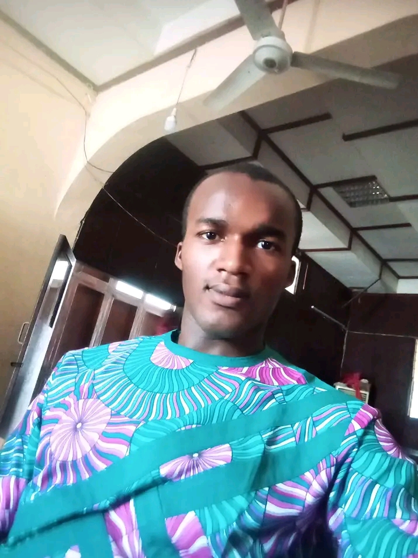

John Okeke

Summary
I am a certified Python Developer specialized in Machine Learning and an upcoming Web Developer.
I am committed making impact in the tech space
Education
- Bachelor of Art, Philosophy - University of Ibadan (2015-2020)
- Bachelor of Philosophy - Urbaniana University, Rome (2015-2020)
- Bachelor of Theology - Urbaniana University, Rome (2021-date)
Other Learnings
- Professional Virtual Assistance - Millonaires Academy (2023)
- Python Development - Trantor Institute (2023-2024)
- AI Career Essentials - ALX Africa (2024)
Work Experince
School Admnistrator - St Peter's Seminary, Okigwe
September 2020 - October 2021
- Responsible for the day to day running of the School
- Managed the boarding section of the School
- Managed the academic staffs and students
Product Manager - Waga Inc.
Fabruary 2024 - April 2024
- Managed the team that built VacAI, an AI vacationa app
- Conducted a market research for the VAcAI app
- Designed the wireframe, prototype and landing page for the VacAI
Skills
Soft Skills
- Critical Thinking
- Teamwork andc Collaboration
- Effectice Time Managemant
- Communication for Impact
- Managing Complex Tasks
- Storytelling
Hard Skill
- Google Workspace
- Data Cleaning and Visualization
- AI Prompt Engineering
Tech Skills
- Python
- Django
- HTML and CSS
- Selenium
Specialization
- Python Development
- Web Development
- Maching Learning
Others